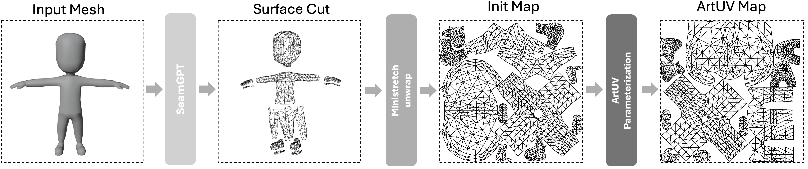

Abstract
UV unwrapping is an essential task in computer graphics, enabling various visual editing operations in rendering pipelines. However, existing UV unwrapping methods struggle with time-consuming, fragmentation, lack of semanticity, and irregular UV islands, limiting their practical use. An artist-style UV map must not only satisfy fundamental criteria, such as overlap-free mapping and minimal distortion, but also uphold higher-level standards, including clean boundaries, efficient space utilization, and semantic coherence. We introduce ArtUV, a fully automated, end-to-end method for generating artist-style UV unwrapping. We simulates the professional UV mapping process by dividing it into two stages: surface seam prediction and artist-style UV parameterization. In the seam prediction stage, SeamGPT is used to generate semantically meaningful cutting seams. Then, in the parameterization stage, a rough UV obtained from an optimization-based method, along with the mesh, is fed into an Auto-Encoder, which refines it into an artist-style UV map. Our method ensures semantic consistency and preserves topological structure, making the UV map ready for 2D editing. We evaluate ArtUV across multiple benchmarks and show that it serves as a versatile solution, functioning seamlessly as either a plug-in for professional rendering tools or as a standalone system for rapid, high-quality UV generation.
Method
ArtUV pipeline. First, SeamGPT is used to predict the semantically meaningful seams on the input mesh surface. Based on these cutting line, the mesh is segmented into charts. For each chart, Ministretch-Unwrap is used to quickly generate the initial UV map. This initial UV map is then input into the ArtUV parameterization module to Optimize the artist-style UV map.
Method

ArtUV parameterization architecture. Res-M MLP: Performs importance-based dimension mapping of input parameters; SAGEConv: Fuses local features between adjacent vertices via graph convolution; Pyramid ED: Enables global vertex interaction through attention encoder and coarse-to-fine decoder; Output: Combines predicted offsets with initial map for final UV parameterization.